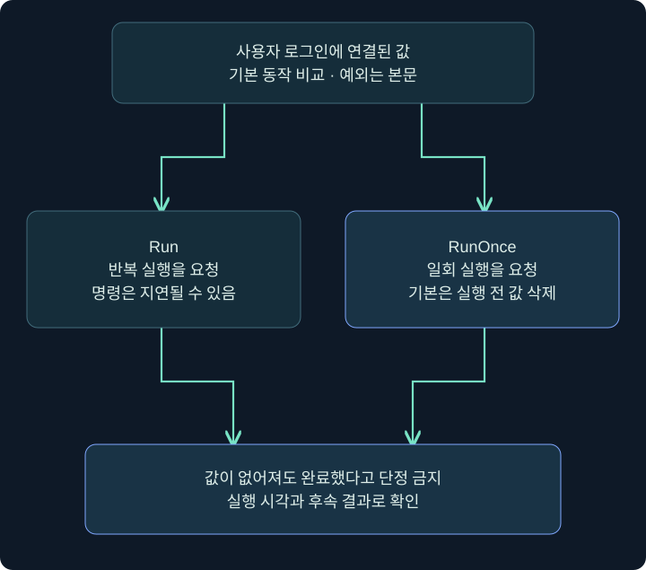
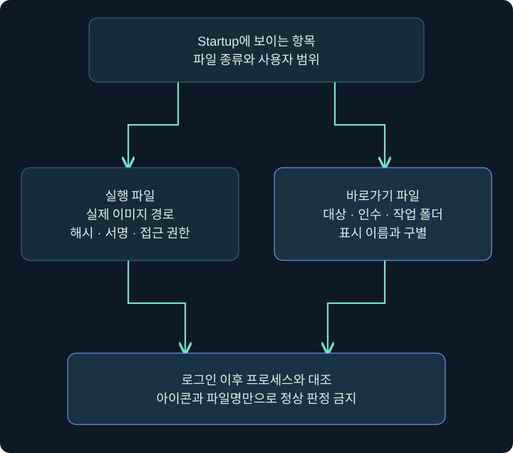
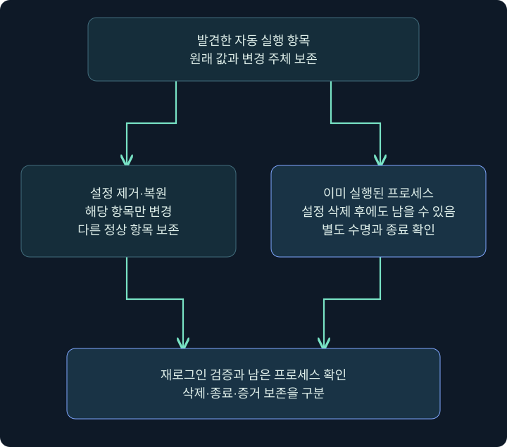

Run·RunOnce·시작 폴더: 로그인 자동 실행의 위치와 수명
실제 Autoruns·콘솔 화면과 레지스트리·바로가기 필드 안내로 로그인 조건, 일회 처리, 실행 확인과 복구를 연결합니다.
1. 로그인하면 앱이 열리는 두 가지 길
컴퓨터를 켠 뒤 메신저나 동기화 앱이 자동으로 열리는 경험이 있을 것입니다. Windows는 앱마다 사람이 아이콘을 누르지 않아도 실행하도록 여러 등록 위치를 제공합니다. 그중 레지스트리 Run 계열과 시작 폴더(Startup)는 사용자 로그인과 연결된 대표적인 위치입니다. 공격자도 같은 기능을 이용할 수 있으므로 정상 배포 기준과 실제 실행을 함께 살펴야 합니다.
두 기능을 출근 안내판에 비유해 봅시다. Run은 매번 출근할 때 읽는 안내, RunOnce는 한 번 처리할 일을 적은 메모, Startup은 출근 때 열어 보는 파일 묶음과 비슷합니다. 다만 실제 Windows에서는 실행 시점이 지연되거나 정책과 사용자 상태의 영향을 받을 수 있습니다. 비유를 정확한 실행 시간 보장으로 받아들이지 않습니다.
이번 강의는 어디를 조회하고 각 값에서 무엇을 읽는지 먼저 배운 뒤, 격리 VM에서 메모장만 여는 학습 설정을 설명합니다. Cobalt Strike는 읽기 전용 레지스트리 조회에 연결합니다. 제품·Windows 예제는 직접 실행한 결과가 아닙니다.
2. Run·RunOnce의 경로와 수명
HKCU\Software\Microsoft\Windows\CurrentVersion\Run
HKCU\Software\Microsoft\Windows\CurrentVersion\RunOnce
HKLM\Software\Microsoft\Windows\CurrentVersion\Run
HKLM\Software\Microsoft\Windows\CurrentVersion\RunOnce| 항목 | 기본 의미 | 조사할 때의 주의 |
|---|---|---|
| HKCU Run | 해당 사용자 로그온마다 실행 요청 | HKCU 사용자·정책·사용 상태 확인 |
| HKCU RunOnce | 일회 로그온 실행 요청 | 계정·OS별 처리 조건과 값 삭제 시점 확인 |
| HKLM Run | 컴퓨터 범위의 로그온 자동 실행 | 값 쓰기 권한과 실행 계정은 별도 |
| HKLM RunOnce | 컴퓨터 범위의 일회 처리 | Microsoft는 재부팅 뒤 관리자 그룹 로그온 조건을 명시 |
키(key)는 폴더에 비슷한 등록 위치이고 그 아래 값(value)은 이름·유형·데이터를 가진 항목입니다. 값 이름은 표시용 설명일 수 있으며 실제 실행 명령은 데이터에 있습니다. 키 하나에 여러 값이 있어도 그 실행 순서가 보장되지는 않습니다.
RunOnce는 기본적으로 명령 실행 전 값이 삭제될 수 있습니다. 따라서 값이 사라졌다고 프로그램이 끝까지 성공했다고 말할 수 없습니다. 삭제 시점에 영향을 주는 접두사와 안전 모드 예외도 있지만, 이 강의는 기본 상태와 실제 관측을 먼저 구분합니다. Microsoft의 현재 Windows 10 문제 해결 문서는 HKCU도 포함한 RunOnce·RunOnceEx가 표준 사용자에서 실행되지 않는 제한과 Administrator·Split Token 계정의 처리 조건을 명시합니다. HKCU라는 이유만으로 모든 표준 사용자 환경에서 동작한다고 가르치지 않으며, 적용 OS·계정·정책에서 실제 실행을 검증해야 합니다.

이 그림은 수명 비교입니다. 특정 로그인 직후 모든 항목이 같은 초에 실행된다거나 값 삭제가 완료 이벤트라는 뜻이 아닙니다.
3. Autoruns에서 등록 위치 찾기
실제 화면 32: Autoruns에서 등록 위치 찾기
출처: Microsoft Press 공개 샘플 — Autoruns, Mark Russinovich·Aaron Margosis, 2017년 2월 17일. 원본 JPEG를 변경하지 않았습니다. Everything이 선택된 과거 화면이며 Logon 선택 결과 사진이 아닙니다. 하단에는 Windows Entries Hidden이 보입니다. 현행 공식 문서의 v14.3 화면을 새로 캡처했다고 설명하지 않습니다.
- 허가된 컴퓨터에서 Autoruns를 열고 사용자 선택과 표시 필터 상태를 기록합니다. 화면에 없는 항목을 곧바로 없다고 판정하지 않습니다.
- 위쪽 Logon 탭을 눌러 로그온 관련 항목으로 좁힙니다. 위 원본은 이 클릭 뒤의 결과가 아니라 탭의 위치를 보여 줍니다.
- 왼쪽 Autorun Entry와 등록 위치 행을 읽고 오른쪽 Image Path를 비교합니다. Publisher·Description은 참고 정보이며 서명 검증 여부도 별도로 봅니다.
- 해당 항목을 선택해 Entry → Jump to Entry로 레지스트리나 파일 위치를 확인합니다. 메뉴 표현은 버전별로 확인합니다.
- 체크박스와 Delete는 설정을 바꿀 수 있습니다. 현재 상태를 읽는 단계에서는 그대로 둡니다. 표시 필터 변경과 자동 실행 비활성화를 혼동하지 않습니다.
| 화면 요소 | 읽을 내용 | 실수하기 쉬운 점 |
|---|---|---|
| Logon 탭 | 로그온 범주의 항목 | Everything 원본을 Logon 결과라고 부르기 |
| 위치 구분 행 | Run·Startup 등의 저장 위치 | 앱 이름만 기록하고 위치 생략 |
| Image Path | 실제 실행 대상 | 표시 이름을 실행 파일명으로 간주 |
| 하단 상태·Options | 숨김·필터 상태 | 숨겨진 Windows 항목을 부재로 판정 |
| 항목 체크박스 | 활성 상태 변경 가능 | 읽기 중 무심코 해제 |
4. Cobalt Strike에서 Run 조회하기
실제 화면 33: Cobalt Strike에서 Run 조회하기
출처: Fortra Beacon Console. 원본의 기존 명령과 결과는 공식 예시입니다. 아래 Run 조회를 수행한 사진은 아닙니다.
세션 우클릭 → Interact → 아래 beacon> 입력 줄 → help reg → 조회 한 줄 → 위쪽 반환 출력 순서입니다. 선택한 세션의 사용자와 레지스트리 뷰를 먼저 적습니다. 이 읽기 전용 예제는 설정 저장 버튼을 누르는 흐름이 아닙니다.
reg query x64 HKCU\Software\Microsoft\Windows\CurrentVersion\Run
reg query x64 HKCU\Software\Microsoft\Windows\CurrentVersion\RunOnce출력에서 값 이름·유형·데이터를 따로 옮겨 적습니다. 명령이 지원되지 않으면 사용자 정의 명령이 필요한지, 기본 reg 도움말과 문법이 맞는지 확인합니다. reg.exe query는 Windows 프로그램의 별도 문법이며 위 명령과 섞지 않습니다. 응답 대기·접근 거부·찾기 실패를 구별합니다.
가상의 출력 TrainingNote / REG_SZ / C:\Windows\System32\notepad.exe는 구조를 읽는 예일 뿐입니다. 이 값만으로 메모장이 실행됐거나 새 원격 세션이 생겼다고 결론 내리지 않습니다.
5. Windows 레지스트리에서 어떤 칸을 설정하나요?
이 절은 소유한 격리 VM에서 현재 사용자 메모장 자동 실행만 가정한 미실행 절차입니다. 실제 레지스트리 편집기 설정창 사진은 확보하지 못했으므로 아래 표를 캡처처럼 제시하지 않습니다. 앞의 Autoruns·콘솔 원본과 아래 필드 설명은 성격이 다릅니다.
- 시작 메뉴에서 레지스트리 편집기를 열고 주소 표시줄에
HKEY_CURRENT_USER\Software\Microsoft\Windows\CurrentVersion\Run을 입력합니다. - 오른쪽에 같은 학습 이름이 없는지 확인하고 변경 전 상태를 기록합니다. 기존 업무 항목을 덮어쓰지 않습니다.
- 오른쪽 빈 곳 → 새로 만들기 → 문자열 값을 선택하고 이름을
TrainingNote로 둡니다. - 새 값을 더블클릭하고 값 데이터에
C:\Windows\System32\notepad.exe를 입력합니다. 실제 Windows 설치 경로가 다르면 그 VM에서 메모장 위치를 먼저 확인합니다. - 확인을 누른 뒤 같은 위치를 다시 조회합니다. 이것은 값 저장 확인입니다. 다음 로그인의 실행 여부는 별도입니다.
| 필드 | 예시값 | 선택 이유 |
|---|---|---|
| 루트와 키 | 현재 사용자 Run | 계정 범위를 좁히기 위함 |
| 값 이름 | TrainingNote | 학습 항목임을 분명하게 표시 |
| 값 유형 | REG_SZ | 이 예는 환경변수 없는 고정 경로 |
| 값 데이터 | 확인한 메모장 전체 경로 | 정상 프로그램만 사용하고 네트워크 실행 없음 |
| 저장 | 확인(OK) | 창을 닫기 전 데이터 재확인 |
REG_EXPAND_SZ는 환경변수 확장이 필요한 문자열에 사용됩니다. %LOCALAPPDATA% 같은 문자열을 봤다면 어느 사용자의 환경에서 확장되는지 확인합니다. 공백이 있는 실행 경로는 따옴표와 인수 경계를 구별해야 합니다. 이름을 Update로 위장하거나 원격 실행 파일로 바꾸는 작업은 이 예제에 필요하지 않습니다.
6. 시작 폴더와 바로가기는 어디에 있나요?
현재 사용자 시작 폴더의 일반적인 위치는 다음과 같습니다. 사용자 폴더의 실제 이동·리디렉션 가능성이 있으므로 환경의 실제 경로를 확인합니다.
%APPDATA%\Microsoft\Windows\Start Menu\Programs\StartupWindows 실행 대화상자에서 shell:startup을 열면 현재 사용자 시작 폴더를 확인할 수 있습니다. shell:common startup은 공통 시작 폴더로 범위가 다릅니다. 두 위치의 경로와 권한을 혼동하지 않습니다. 파일 탐색기와 바로가기 속성의 실제 사진은 이 강의에 확보하지 못했습니다.
무해한 별도 실습에서는 현재 사용자 시작 폴더 → 새로 만들기 → 바로 가기 → 확인한 메모장 경로 → 학습 이름 TrainingNote → 마침 순서로 등록할 수 있습니다. Run 예와 동시에 등록하면 메모장이 어느 경로로 실행됐는지 혼동되므로 한 번에 한 조건만 검증하고 정리합니다.
| 바로가기 속성 | 읽을 내용 | 이유 |
|---|---|---|
| 대상(Target) | 프로그램 경로와 뒤의 인수 | 실제 실행을 결정 |
| 시작 위치(Start in) | 작업 폴더 | 상대 경로 해석에 영향 |
| 파일 종류 | LNK인지 실행 파일인지 | 표시 이름·아이콘으로 판별 불가 |
| 실제 대상 파일 | 경로·해시·서명·권한 | 링크 존재와 대상 존재 구별 |

7. 로그인 뒤 무엇을 확인하나요?
가상의 실습에서 저장 뒤 같은 사용자가 로그오프·로그인했다고 해 봅시다. 메모장이 열렸다면 프로세스 경로·사용자·시각을 설정과 연결합니다. 단순히 재부팅했어도 해당 사용자가 로그인하지 않았다면 같은 트리거를 검증한 것이 아닙니다. Windows가 시작 항목을 지연할 수도 있으므로 즉시 창이 없다는 사실만으로 실패라 단정하지 않습니다.
설정은 있는데 실행이 없다면 대상 파일 존재, 사용자 범위, 시작 앱 비활성화 상태, 정책, 경로·따옴표, 접근 권한을 확인합니다. RunOnce에서는 값이 이미 사라졌을 가능성과 계정별 처리 조건을 같이 검토합니다. 확인을 위해 기존 업무 설정을 임의로 바꾸지 않습니다.
프로세스가 실행돼도 등록값 때문에 실행됐는지는 별도입니다. 사용자가 직접 메모장을 열었거나 다른 작업이 실행했을 수 있습니다. 타임라인·명령줄·실행 주체·로그인 시각을 대조하고 인과관계가 불확실하면 그대로 적습니다.
8. 정리는 파일 삭제와 다릅니다
Run 값 제거는 재실행 요청을 제거하는 것이고 프로그램 제거는 아닙니다. Startup의 LNK를 지우는 것도 대상 실행 파일 삭제와 다릅니다. 반대로 대상 파일만 삭제하면 깨진 자동 실행 구성이 남을 수 있습니다.

실습 정리는 자신이 만든 정확한 TrainingNote 값 또는 바로가기만 대상으로 합니다. 기존 항목을 수정했다면 원래 데이터·유형으로 복원해야 하므로 사전 기록이 필요합니다. 관련 프로세스를 확인하고 다음 로그인에서 새 실행이 없음을 관측합니다. 정책으로 다시 생성되는 항목이라면 로컬 삭제만 반복하지 말고 관리 주체와 원인을 조사합니다.
9. 조건을 바꾸어 생각해 보기
같은 메모장 경로라도 A사용자의 HKCU와 B사용자의 HKCU는 다릅니다. 같은 값 이름이어도 데이터가 달라지면 대상 프로그램이 달라집니다. 같은 LNK라도 Target 뒤에 인수가 붙거나 Start in이 다르면 동작이 달라질 수 있습니다.
조사 사례를 항목 이름 → 악성으로 줄이지 말고 어느 사용자의 어느 위치 → 어떤 전체 명령 → 언제 바뀜 → 실제로 무엇이 실행됨 → 정상 변경 근거로 써 보세요. RunOnce 값 부재를 완료로, Autoruns 필터로 숨은 항목을 부재로, 설정 삭제를 프로세스 종료로 오해하는 세 가지를 특히 주의합니다.
10. 복습과 바로 읽는 해설
복습 1. Run은 시스템 부팅만 하면 즉시 실행되나요?
해설: 대표적인 조건은 사용자 로그온이며 즉시 실행 시각도 보장되지 않습니다. 부팅·로그온·실행을 나누어 확인합니다.
복습 2. RunOnce 값이 사라졌으면 성공인가요?
해설: 기본은 실행 전에 삭제될 수 있습니다. 프로그램 실행·완료는 다른 증거가 필요합니다.
복습 3. 값 이름과 값 데이터 중 실제 대상을 정하는 것은?
해설: 데이터의 명령줄입니다. 이름과 설명만으로 프로그램을 판단하지 않습니다.
복습 4. 공식 Autoruns 사진은 Logon 선택 결과인가요?
해설: Everything 선택의 2017년 원본입니다. Logon 탭 위치와 숨김 상태를 읽는 데 사용합니다.
복습 5. Autoruns 체크박스를 조회 중 해제해도 되나요?
해설: 자동 실행 구성을 바꿀 수 있습니다. 읽기 전용 조사 단계에서는 유지합니다.
복습 6. 시작 폴더 LNK를 지우면 대상 EXE도 지워지나요?
해설: 별도 파일입니다. 바로가기 제거와 대상 프로그램 제거를 구별합니다.
복습 7. 왜 Run과 Startup 실습을 동시에 하지 않나요?
해설: 같은 앱이 열리면 원인을 구분하기 어렵습니다. 한 조건씩 등록·관측·정리합니다.
복습 8. 값을 지웠는데 프로세스가 남았습니다. 모순인가요?
해설: 아닙니다. 재실행 설정과 이미 실행 중인 프로세스는 수명이 다릅니다.
11. 공식 자료와 적용 범위
확인일: 2026년 11월 4일. 실제 제품·레지스트리·로그인 예제는 미실행입니다. 공식 이미지의 화면 버전과 실습 가정을 구별했습니다.
- Microsoft Run and RunOnce: 수명·삭제·지연·계정 조건.
- Microsoft 표준 사용자 RunOnce 제한: OS·계정별 해석 주의.
- Microsoft 시작 앱 구성: 시작 폴더와 사용자·공통 범위.
- Microsoft Sysinternals Autoruns: 도구·표시·탐색 기능.
- Microsoft Press 실제 Autoruns 예시: 역사적 원본 화면.
- MITRE T1547.001: Run 키와 시작 폴더의 악용 분류.